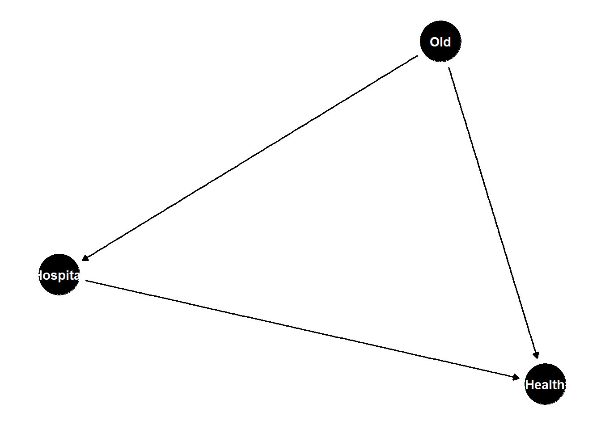
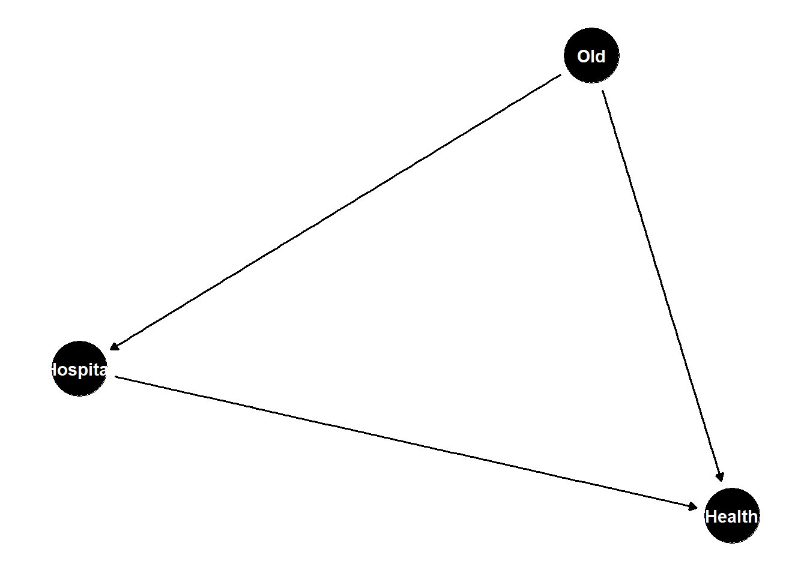
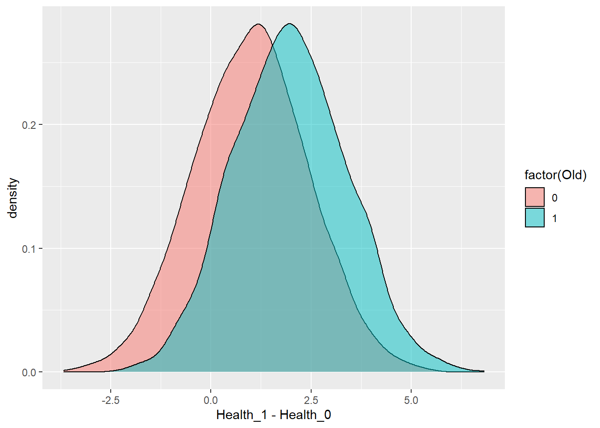

library(tidyverse)
library(dagitty)
library(ggdag)
dagify(Health ~ Old + Hospital,
Hospital ~ Old) |>
ggdag() +
theme_dag()
Chapter 10 of the book was a bit confusing on this point, so I thought up what I think is a clearer example. Hopefully this helps.
Suppose we want to know if hospitals are good or bad for your health, and we have a data-generating process that looks like this:
Old people are more likely to go to the hospital than young people.
Old people are generally in worse health than young people.
Hospitals are good for you.
library(tidyverse)
library(dagitty)
library(ggdag)
dagify(Health ~ Old + Hospital,
Hospital ~ Old) |>
ggdag() +
theme_dag()
Classic confounding. If we want to know whether hospitals are good for you, we have to condition on age.
Here’s the new wrinkle we’re going to throw in: the effect of hospitals is not constant. Hospitals are more effective for old people than young people. (i.e. young people are better able to bounce back without going to the hospital.)
Let’s simulate some data from that process using the potential outcomes framework. Half the people are old.
set.seed(42)
N <- 4e3
Old <- sample(c(0,1), size = N,
replace = TRUE)Everybody has two potential Health outcomes: one if they go to the hospital, and another if they don’t. In either case, it’s worse to be Old. But it’s slightly less worse to be Old if you go to the Hospital.
Health_0 <- rnorm(N) - 4 * Old
Health_1 <- rnorm(N) - 3 * Old + 1Here’s the distribution of treatment effects:
ggplot(mapping = aes(x = Health_1 - Health_0,
fill = factor(Old))) +
geom_density(alpha = 0.5)
Everybody has a different treatment effect!1 Crucially, notice that the average treatment effect (ATE) is larger for Old people than for Young people. Twice as large, in fact. The ATE for young people is 1, and the ATE for old people is 2.
mean( (Health_1 - Health_0)[Old == 1] )[1] 1.97846mean( (Health_1 - Health_0)[Old == 0] )[1] 0.997988Now let’s send some of these people to the Hospital. But remember, they’re more likely to go to the Hospital if they’re old. Let’s 50% of the Old people go to the Hospital, but only 5% of the Young people do.
# draw a random number between 0 and 1. Send an Old person to the Hospital
# if it's less than 0.9, but only send a Young person to the Hospital
# if it's less than 0.1
Hospital <- as.numeric(runif(N) < ifelse(Old == 1, 0.5, 0.05))
table(Hospital, Old) Old
Hospital 0 1
0 1943 965
1 97 995Finally, we observe one potential outcome for each person, depending on whether or not they went to the Hospital.
Health <- Health_1 * Hospital + Health_0 * (1 - Hospital)If we look at the unadjusted effect of Hospitals on Health, it’s a disaster. Hospitals are horrible for you.
lm(Health ~ Hospital)
Call:
lm(formula = Health ~ Hospital)
Coefficients:
(Intercept) Hospital
-1.3350 -0.4378 Obviously that’s a confounded estimate. So we condition on age:
lm(Health ~ Hospital + Old)
Call:
lm(formula = Health ~ Hospital + Old)
Coefficients:
(Intercept) Hospital Old
-0.04531 1.81371 -3.88635 This is better! Hospitals are good for you, and once we condition on age our estimate agrees. But…what exactly is our estimate? The CATE for Young people is 1 and the CATE for Old people is 2. This is somewhere in the middle, but closer to the CATE for Old people.
The reason why our estimate is closer to an Old person’s treatment effect is that so few Young people are going to the Hospital. There are 1,000 hospitalized Old people to compare against 1,000 unhospitalized Old people, but there are only 100 hospitalized Young people, so the regression estimates are going to put most of the weight on the Old people, because that’s where all the evidence is.
If this is still confusing, imagine what would happen if no Young people went to the Hospital. Heck, you don’t have to imagine it. Go into the code and change it so that only Old people go to the Hospital. If only Old people went to the Hospital, then we could only estimate the CATE for Old people; there would be no Young people at the Hospital to help us figure out whether or not Hospitals are good for Young people! So the only thing that comes out of our regression is going to be 2. As more and more Young people go to the Hospital, the more the regression estimate will put weight on their treatment effects.
This, in a nutshell, is variance-weighted treatment effects. Once you start conditioning on things, the groups with more variance in treatment will get more weight in the estimate.
What if we wanted to get the ATE instead of the variance-weighted treatment effect? I want to know whether hospitals are good for the average person, and 50% of my population is young.
If we want to do that, we’ve got to give the Young people more weight in the regression.
# create a dataset
d <- tibble(Old, Hospital, Health)
# what's the variance of treatment in each group?
d |>
group_by(Old) |>
summarize(treatment_variance = var(Hospital),
inverse_variance = 1/var(Hospital))# A tibble: 2 × 3
Old treatment_variance inverse_variance
<dbl> <dbl> <dbl>
1 0 0.0453 22.1
2 1 0.250 4.00To get the Average Treatment Effect for everyone, we need to weight the Young people about 5.8 times more than the Old people.
# merge the weights into the dataset
d <- d |>
group_by(Old) |>
summarize(treatment_variance = var(Hospital),
inverse_variance = 1/var(Hospital)) |>
right_join(d, by = 'Old')
# estimate a weighted linear regression
lm(Health ~ Hospital + Old,
data = d,
weights = inverse_variance)
Call:
lm(formula = Health ~ Hospital + Old, data = d, weights = inverse_variance)
Coefficients:
(Intercept) Hospital Old
-0.03017 1.49531 -3.73985 Magical!
In the real world, of course, these individual treatment effects are unobservable.↩︎